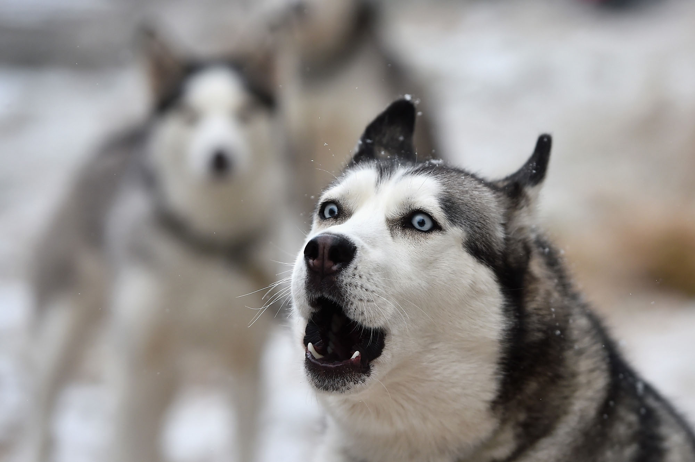

Husky
Husky is a general term for a dog used in the polar regions, primarily
and specifically for work as sled dogs. It refers to a traditional
northern type, notable for its cold-weather tolerance and overall
hardiness.